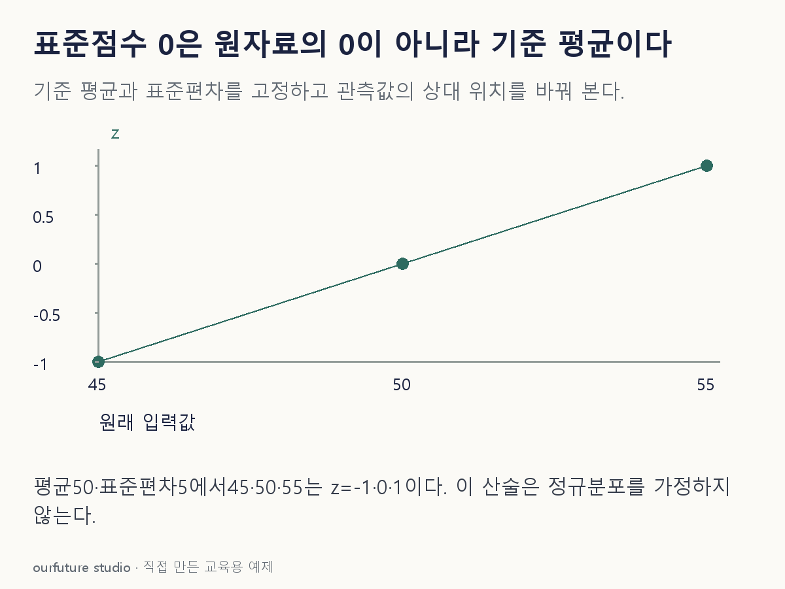

핵심 이론
평균 μ와 표준편차 σ>0을 기준으로 한 표준점수는 z=(x−μ)/σ다. 분자는 평균에서 얼마나 떨어졌는지, 분모는 그 자료의 전형적인 산포 단위를 나타낸다. x가 기준 평균과 같으면 분자는 0이다. 평균보다 크면 양수, 작으면 음수가 되므로 부호와 절댓값을 각각 해석할 수 있다.
이 변환은 원래 단위를 없애 서로 다른 척도의 입력을 비교하거나 거리 기반 학습에 사용할 때 도움이 된다. 그러나 표준화를 했다고 분포 모양이 정규분포로 바뀌지는 않는다. 양수 평균의 자료도 평균보다 작은 관측에서는 음의 z가 나오며, 음수라고 잘못된 값으로 지우면 안 된다.
문제에서는 모집단 표준편차인지 표본 표준편차인지, 또는 소프트웨어가 어떤 분산 정의를 쓰는지 확인한다. ddof는 분산을 구할 때 관측 수 n에서 빼는 수로, 분모는 n−ddof다. 예를 들어 ddof=0이면 n, ddof=1이면 n−1로 나눈 뒤 제곱근을 취하므로 같은 자료라도 표준편차가 달라질 수 있다. 아래 예제는 평균과 표준편차를 이미 주었으므로 추정 방식을 다시 선택하지 않는다. 예측에서는 훈련에서 얻은 평균·표준편차를 평가 자료에 그대로 적용한다.
작은 예제로 확인하기
기준 평균은 50, 표준편차는 5로 고정한다.
| 원자료 x | 계산 | z |
|---|---|---|
| 45 | (45−50)/5 | −1 |
| 50 | (50−50)/5 | 0 |
| 55 | (55−50)/5 | 1 |
z=0은 기준 평균과 같은 위치이고 z=1은 평균보다 표준편차 한 단위만큼 큰 위치다.
그림으로 확인하기

직접 고르기
기준 평균 50, 표준편차 5이며 x=50이다. z=(x−평균)/표준편차를 사용한다.
z와 그 의미로 옳은 것은?
- 1. 0·원래 측정값이 0이다
- 2. 1·평균과 같다
- 3. 0·기준 평균과 같다
- 4. −1·기준 평균보다 크다
정답과 오답의 이유 확인하기
정답 3번 — 0·기준 평균과 같다
(50−50)/5=0이고 이는 기준 평균과 같은 위치라는 뜻이다.
- ① 원자료는 50이며 변환 후 0의 뜻을 혼동했다.
- ② 평균에서 표준편차만큼 커야 z=1이다.
- ④ z=−1은 여기서는 원자료 45의 위치다.
조건 하나 바꾸어 풀기
기준을 유지하고 x만 55로 바꾸면?
풀이: z=1
평균보다 5 크고 표준편차가 5이므로 5/5=1이다.
다시 떠올릴 단서
표준점수 0은 그 자료의 출발점이 아니라 평균 위치다.
근거와 적용 조건
- scikit-learn: Preprocessing data — 8.3.1 Standardization. 확인일 2026-10-30.
상황·수치·보기·조건 변경은 자체 교육 예제다. 민간 복원 문항의 공식 정답이나 실제 성능·학습 효과를 뜻하지 않는다.
읽은 내용을 적용해 보기
주어진 기준으로 계산한다. 분산 추정법과 정규성은 별도이며 운영 입력에서 다시 fit하지 않는다.